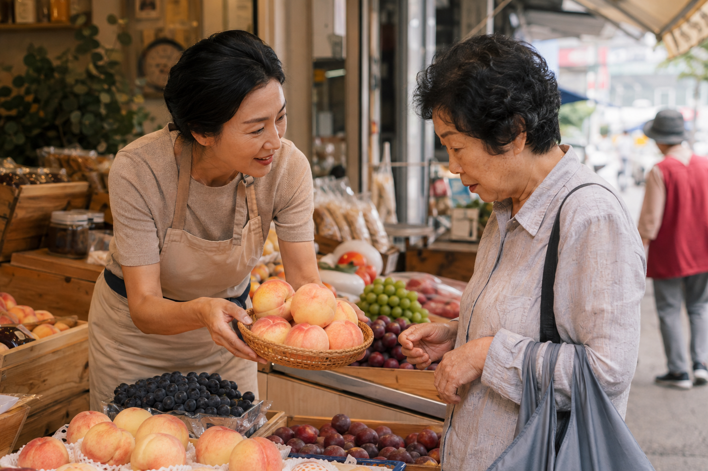

ESG / REPORT · 2026.09.04
조금 무른 복숭아를
잼용으로 다시 권하는 오후
오후 햇빛이 가게 안쪽까지 들어오는 시간, 복숭아 상자 하나가 애매하게 남는 날이 있습니다. 단단한 것부터 먼저 빠지고 나면 조금 무른 복숭아는 뒤로 밀리기 쉽지만, 어떤 가게는 그 과일에 다른 하루를 붙여 줍니다.

복숭아는 보기 좋은 순서대로 팔리기 쉽습니다. 표면이 단단하고 모양이 또렷한 것은 설명이 짧아도 금방 손에 잡힙니다. 반대로 조금 무른 복숭아는 맛이 없어서가 아니라, 지금 어떤 용도로 좋은지 말이 붙지 않으면 한 번 더 망설이게 됩니다. 그래서 같은 과일도 어떤 설명을 만나느냐에 따라 남는 과일이 되기도 하고, 바로 집으로 가는 과일이 되기도 합니다.
가게에서 “이건 오늘 그냥 드시기보다 잼으로 끓이면 좋아요”라고 말하는 순간, 기준이 모양에서 쓰임으로 바뀝니다. 손님도 그제야 가장 예쁜 복숭아를 고르는 사람이 아니라 오늘 저녁 냄비에 어울리는 복숭아를 고르는 사람이 됩니다. 버려질 가능성이 있던 과일이 다른 방식으로 제 역할을 찾는 장면은 그렇게 설명 한마디에서 시작됩니다.
과일을 다시 살리는 것은 새로운 기술보다 맞는 쓰임을 붙여 주는 말에 더 가까울 때가 있습니다.
지속가능성은 거창한 문장으로만 움직이지 않습니다. 냉장고 안에서 빨리 먹어야 하는 과일을 어떻게 소개할지, 흠집이 조금 있는 과일을 누구에게 어떤 방식으로 권할지 같은 아주 작은 판단이 매일 쌓이면서 달라집니다. 특히 복숭아처럼 숙도가 빨리 변하는 과일은 할인만으로는 설명이 모자랄 때가 많습니다. 왜 오늘 더 잘 맞는지, 어떻게 먹으면 좋은지까지 말해 줄 때 손님은 가격이 아니라 용도를 보고 고르게 됩니다.
보기 좋은 과일을 먼저 파는 일에서 멈추지 않고, 지금 먹기 좋은 과일과 다르게 써도 좋은 과일을 나눠 설명할 때 버려질 가능성은 줄고 선택의 언어는 더 넓어집니다.
이 장면은 ESG가 현장과 멀리 떨어져 있지 않다는 것을 보여 줍니다. 과일 폐기를 줄이는 일은 대단한 캠페인만 뜻하지 않습니다. 남을 뻔한 과일에 맞는 소비 장면을 다시 연결하고, 손님이 그 차이를 이해하도록 생활 언어로 풀어 주는 일도 분명한 실천입니다.
대한과일협회는 이런 장면을 REPORT에 남기고 싶습니다. 조금 무른 복숭아를 잼용으로 다시 권하는 오후는, 과일을 덜 버리는 방법이 꼭 복잡할 필요는 없다고 말해 줍니다. 잘 고르는 기술만큼, 다르게 권하는 언어가 중요하다는 사실을 현장은 이미 조용히 보여 주고 있습니다.